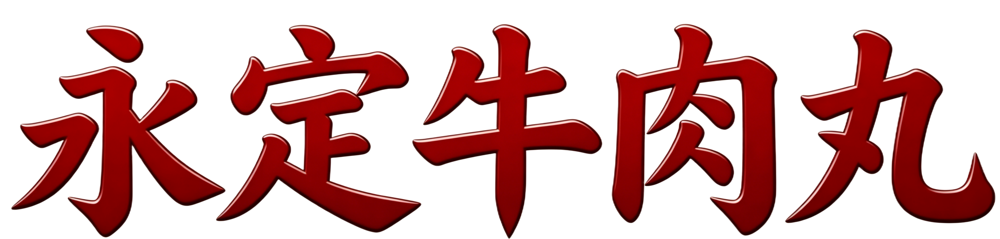
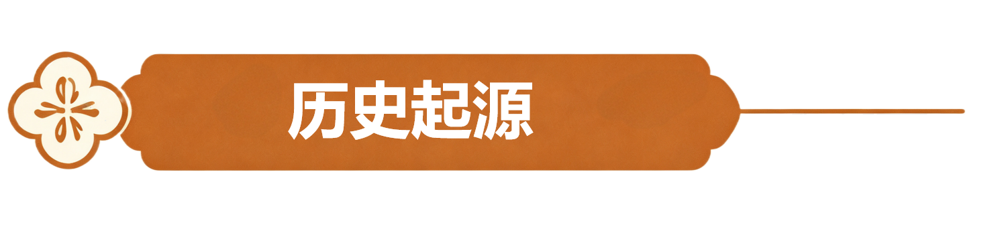

⑤ 捏丸入锅 · 温水定型
将肉糜捏成2公分大小的丸子，下入锅中定型，在清水未沸即沸的时候就下入丸子定型，是肉丸弹而不硬、嫩而不柴的关键。

⑦ 鱿鱼干烧沸 · 同煮提鲜
锅内下入鱿鱼干，烧沸。将牛肉丸同浸泡的凉水一起下入锅中，可以使牛肉丸更加清甜爽口。


下洋镇有着长达数百年的食牛史，当地人把吃牛开发到了极致，牛身从头到脚、从里到外，一头牛就能做出上百种菜肴，并成就最具代表性的永定特色美食——全牛宴。"永定全牛宴"涵盖了从"头"吃到"脚"，从"外"吃到"内"的各种美食：卤盘牛系列、红烧牛排、香炸牛胸仁、椒盐牛蹄、爆炒牛八脆、黄焖牛尾、牛鞭巴戟天汤、牛肉兜汤、芋子包、牛肉丸等10道牛系列菜品。在"牛系列"中，最负盛名的当数下洋牛肉丸。